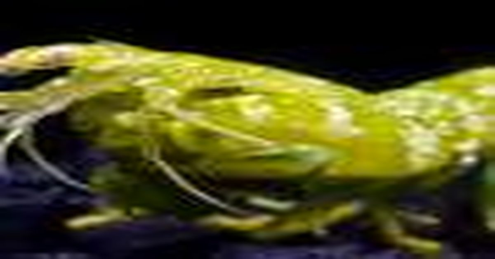

Чувствительные к красному пигменты в глазах богомолов действуют как обратимые выключатели света
Имея около 30 визуальных пигментов по сравнению с тремя у людей, креветки-богомолы обладают зрительной системой, которая остается загадкой.
Исследователи из ULiège и Университета Гумбольдта в Берлине впервые проанализировали эти пигменты один за другим и обнаружили, что некоторые обнаруживают красный свет, который могут воспринимать очень немногие животные.
Это открытие, опубликованное в Science Advances, имеет потенциальные применения в оптогенетике.